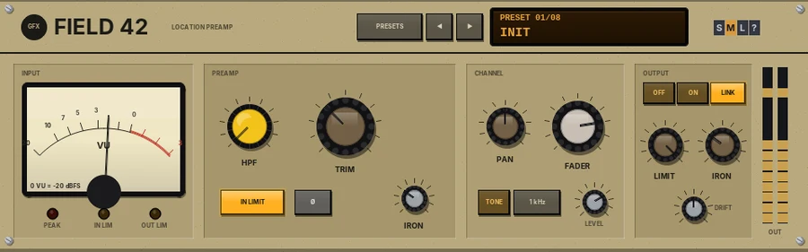

Field 42
One input channel of a battery-powered location mixer: transformer preamp, sweep HPF, safety and output limiters, iron output.

Overview
Field 42 is one input channel of a small, battery-powered location mixer of the kind used for film and broadcast sound, for a single track. It works in mono or stereo, as REAPER decides. The signal runs as on the hardware: a sweepable high-pass filter, TRIM into a transformer-balanced preamp, a fixed input "safety" limiter, polarity, FADER and PAN, then the output limiter and the custom output transformer.
At normal levels it is very clean. Push TRIM and the input transformer thickens the low end before the preamp meets its rail; the limiters catch peaks hard and fast, as they were designed to protect a recording on location. Levels are lined up as on location gear: 0 dBu = -20 dBFS = 0 on the VU.
Reach for it for
- Dialogue, voice-over and location recordings
- A clean, safe preamp-and-limiter on any track
- Gentle iron weight on drums, bass and acoustic instruments
- Catching stray peaks before they reach the mix
Controls
INPUT
- VU meter
- The level after the preamp, before the limiters, with VU ballistics. 0 VU = -20 dBFS.
- PEAK
- Lights when the preamp's output goes above -1 dBFS.
- IN LIM / OUT LIM
- Light when the input or output limiter is working.
PREAMP
- HPF
- A high-pass filter, 80 to 240 Hz, 12 dB per octave, before the preamp. Fully left is OFF.
- TRIM
- Gain into the preamp, -20 to +40 dB.
- IN LIMIT
- The input safety limiter: fixed at -2 dBFS (+18 dBu), 20:1, very fast. On by default.
- Ø
- Polarity reverse.
- IRON
- The input transformer's colour (also in the parameter list).
CHANNEL
- PAN
- Constant loudness: +3 dB at hard left or right, as on the hardware. On a stereo track it works as a balance.
- FADER
- Unity at 0 dB; -40 dB (OFF) to +10 dB.
- TONE
- A line-up oscillator that replaces the signal. The next key picks 1 kHz, 400 Hz or 100 Hz; LEVEL sets -20 to +8 dBu (0 dBu = -20 dBFS).
OUTPUT
- OFF / ON / LINK
- The output limiter: off, each side on its own, or stereo-linked (the default).
- LIMIT
- The output limiter's threshold, +4 to +20 dBu (-16 to 0 dBFS), 20:1.
- IRON
- The output transformer: low-mid weight and a softer top when driven.
- DRIFT
- See Drift below.
- OUT meters
- The output level, left and right.
Presets and size
- PRESETS
- Opens the list of factory presets (or click the preset display).
- ◄ / ►
- Step through the presets.
- Preset display
- Shows the preset number and name. Click it for the list.
- S / M / L
- Panel size: small, medium or large. The panel also scales to fit the plugin window.
- ?
- Opens a pop-up with the design credit, the GFX website address and the address of this manual. Click anywhere to close it.
Parameter list only
INPUT IRON (the input transformer's colour, 30% by default), LIMITER ATTACK and RELEASE (1 ms and 200 ms by default, as on the original), and the GFX output stage: OUTPUT STAGE (CLIP by default, a soft clipper just under 0 dB; LIMIT; OFF), its ceiling, and the house band saturation.
Drift
DRIFT (0 - 100%, 50% by default) is battery sag. The supply voltage wanders slowly and droops under heavy, sustained level, so the preamp's headroom, the limiter thresholds and the transformers' drive all move a little - you hear it most when the unit is pushed. 50% is the standard amount, 100% twice that; 0% is a fresh battery.
Presets
- Init
- Clean: HPF off, unity gain, both limiters on.
- Dialogue Boom
- HPF at 120 Hz, +6 dB.
- Lavalier
- HPF at 160 Hz to clear clothing rustle and rumble.
- Acoustic
- HPF at 85 Hz, a little more iron.
- Drum Room
- +12 dB into the iron, output limiter at +14 dBu.
- Kick and Bass
- HPF off, heavy iron, limiter per side.
- Hot Field
- +18 dB, lots of iron, a low output limit: dense and driven.
- Safety Net
- Unity gain with the output limiter at +10 dBu: a quiet, safe ceiling.
Tips
- Set TRIM so the VU swings around 0 on the loud parts; that is where the iron starts to colour.
- Use the TONE to line up levels between tracks or with other gear.
- LINK keeps a stereo image steady under limiting; ON lets each side limit on its own.
File: gfx-field-42.jsfx